Note
Hello, welcome to the SunFounder Raspberry Pi & Arduino & ESP32 Enthusiasts Community on Facebook! Dive deeper into Raspberry Pi, Arduino, and ESP32 with fellow enthusiasts.
Why Join?
Expert Support: Solve post-sale issues and technical challenges with help from our community and team.
Learn & Share: Exchange tips and tutorials to enhance your skills.
Exclusive Previews: Get early access to new product announcements and sneak peeks.
Special Discounts: Enjoy exclusive discounts on our newest products.
Festive Promotions and Giveaways: Take part in giveaways and holiday promotions.
👉 Ready to explore and create with us? Click [here] and join today!
Fun5 Fishing
Dive into our interactive fishing game, utilizing the left obstacle avoidance module for an engaging experience.
When the script is active, fish will swim back and forth across the stage. To catch a fish, you must block the left obstacle avoidance module just as the fish is about to pass the hook. The game automatically records the number of fish you catch.
Follow these initial steps to set up the project, and feel free to customize the effects once you are familiar with the setup.
1. Add Background and Sprites
First, select an Underwater backdrop, then add a Fish sprite and let it swim across the stage.
Use the Choose a Backdrop button to select an Underwater backdrop.
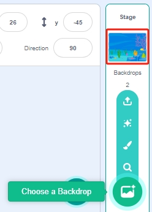
Delete the original sprite, then select the Fish sprite.
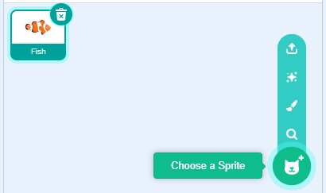
Adjust the size and position of the Fish sprite.
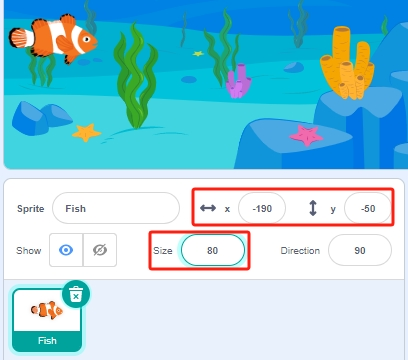
2. Draw a Fishhook Sprite
Next, create a Fishhook sprite, which you will control via the left obstacle avoidance module to start fishing.
Add the Glow-J sprite via Choose a Sprite and rename it “Fishhook”.
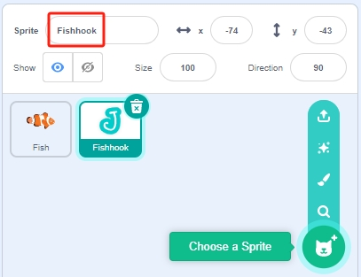
Navigate to the Costumes page of the Glow-J sprite, rename it Fishhook, select the internal white ‘J’, and change its color to red.
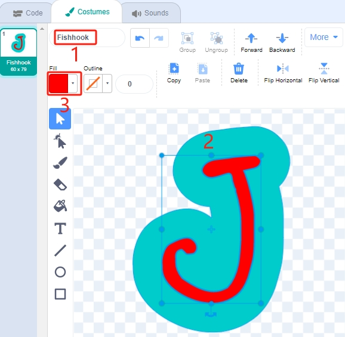
Remove the outer cyan fill and reduce its width. Ensure the top of the hook aligns with the center point.
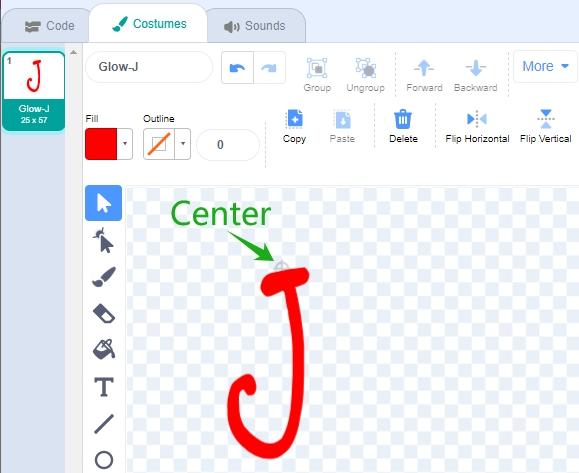
Use the Line tool to draw a line extending upward from the center point, extending out of the stage.
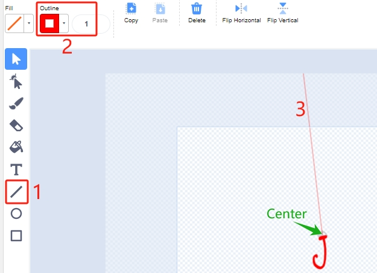
{kind=link}
3. Scripting for the Fish Sprite
The Fish sprite should move left and right on the stage, and when it interacts with the Fishhook sprite in the fishing state, it should shrink, move to a specific position, then disappear, followed by the spawning of a new Fish sprite.
Create a variable score to store the number of fish caught, hide this sprite, and clone it.
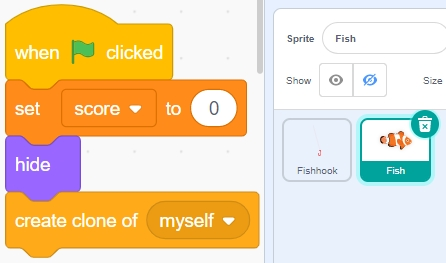
Display the clone of the Fish sprite, switch its costume, and set the initial position.
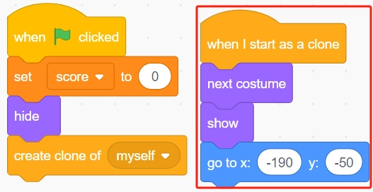
Enable the clone of the Fish sprite to move left and right and bounce back when touching the stage’s edge.
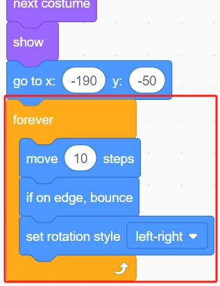
If the clone of the Fish sprite touches the Fishhook sprite in the fishing state (when it turns red).
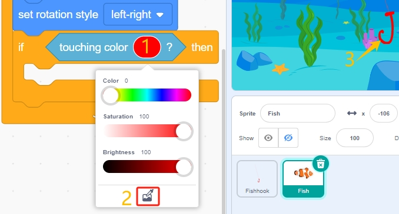
Increase the score (variable score) by 1, show a scoring animation (shrinks by 40%, quickly moves to the scoreboard’s position and disappears). Simultaneously, create a new fish (a new Fish sprite clone) and continue the game.
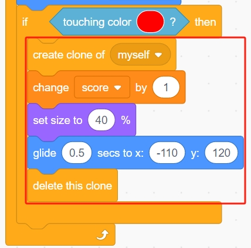
{kind=link}
4. Scripting for the Fishhook Sprite
The Fishhook sprite generally stays underwater in a yellow state. When your hand blocks the left-side infrared module, it changes to the fishing state (red) and moves above the stage.
When the green flag is clicked, set the sprite’s color effect to 30 (yellow) and set its initial position.
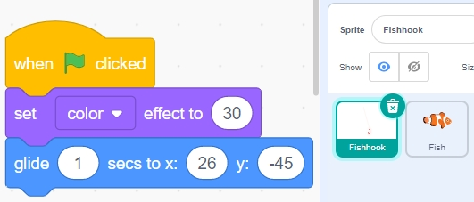
When your hand blocks the left-side infrared module, set the color effect to 0 (red, initiating the fishing state), wait for 0.1 seconds, then move the Fishhook sprite to the top of the stage.
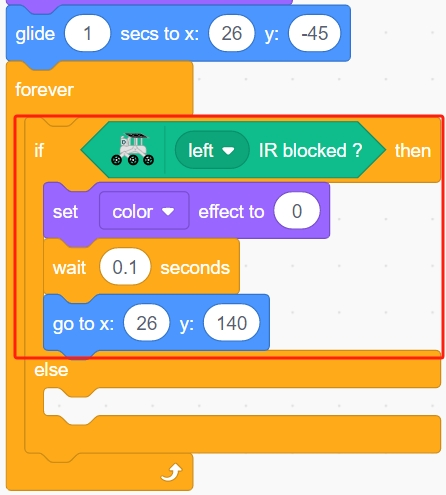
After removing your hand, let the Fishhook return to its initial position.
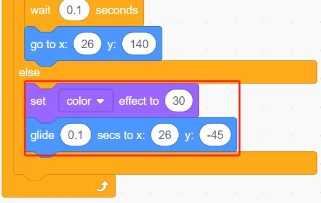
Once you’ve completed programming, click the green flag to run the script and see if it achieves the desired effect.